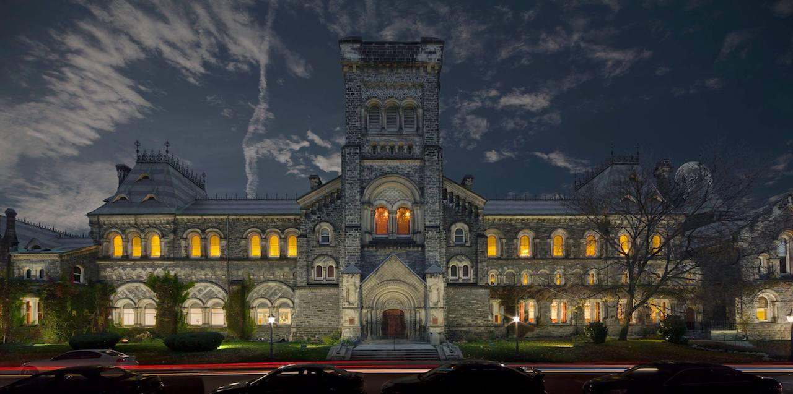
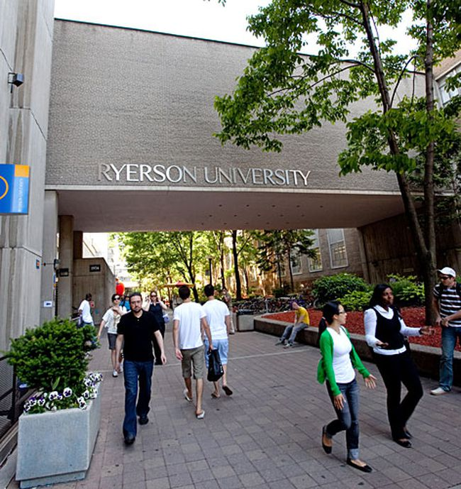
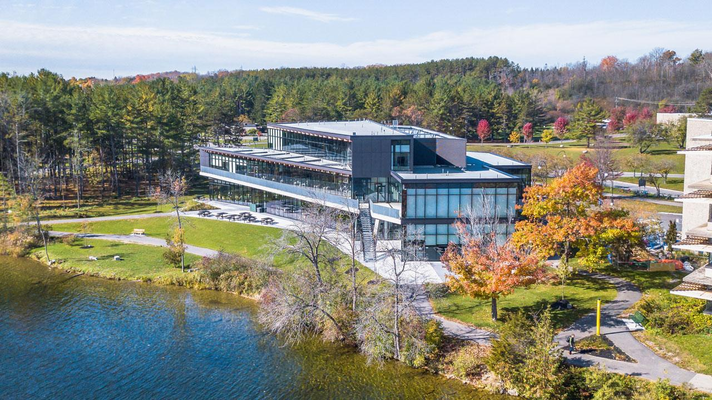

-
University of Toronto
This one takes the cake, as University of Toronto isn’t just the highest-ranked college in the city, but it’s consistently ranked as one of the best colleges in Canada. Frequently battling with Montreal’s McGill University for the spot of top dog in Canada, the University of Toronto is currently #1 in Maclean’s rankings of medical-doctoral universities. It also happens to be located near some of Toronto’s most popular neighbourhoods, including the Annex. As a global leader in research and teaching, this school offers an unparalleled educational environment all in the heart of the city. When it comes down to it, the University of Toronto truly is the best college in Toronto.
-
York University
The third-largest college in Canada and the second-largest in Ontario, York University claims our #2 spot of the best colleges in Toronto. With 300+ student organizations and clubs, 200+ undergraduate and graduate degree programs, and two sprawling campuses both just north of Toronto, York is a college with a lot to offer. The Keele campus is home to more than 50,000 students, shops and restaurants, and a thriving student body community; the Glendon campus offers a more intimate setting with just over 2,500 students.
-
Ryerson University
Located next door to Old Town and Downtown Toronto, Ryerson University is perfect for the city-slicker. Ryerson is the #25 spot on the U.S. News Best Global Universities in Canada rankings. On top of that, Ryerson has its own startup accelerator, DMZ, and it’s ranked the #1 university-based accelerator in the world by UBI Global. Since 2007, DMZ has help more than 350 startups grow and graduate. Even though Ryerson is in the heart of the city, it still manages to maintain a tight-knit community and boasts 70+ student groups so you’ll be able to find your place.
-
Trent University
There’s a reason Trent has earned the #1 spot on Maclean’s University Ranking in the Primarily Undergraduate category for Ontario colleges. Technically not located in Toronto, Trent is nestled along the banks of the Otonabee River an hour and a half northeast of the city centre. Its scenic campus bisected by the river is surrounded by tree-lined streets and plenty of greenery, which means you’ll find students and faculty biking, jogging, and paddling on the water. Trent also boasts 12 varsity men’s and women’s sports teams, so there are plenty of opportunities to get out there and show some school spirit
-
Humber College
At each of its three campuses, Humber provides students innovative learning across its 8 different schools, or academic areas. Being a polytechnic school means Humber’s programs are career-focused and bring real world experience into the classroom. Humber North, the largest of the three campuses, is set on 100 acres of parkland next to the Humber River. Be sure to check out Humber Arboretum, a 250-acre public garden. The school’s 19 varsity sports teams compete in OCAA and CCAA Athletics, so you can watch the Hawks take on opponents throughout the year. Join the student population of just over 31,000 and become a Humber Hawk!